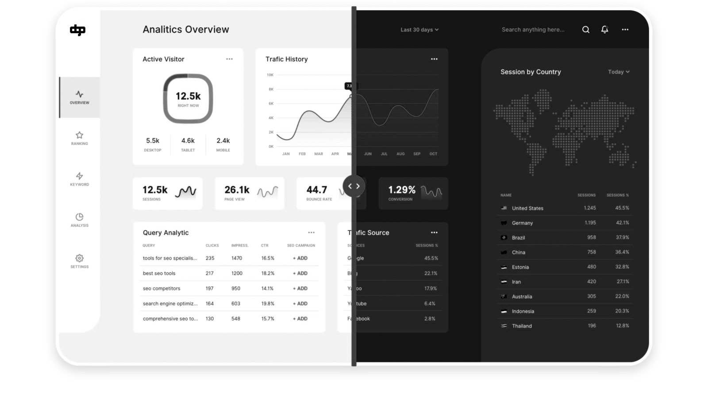
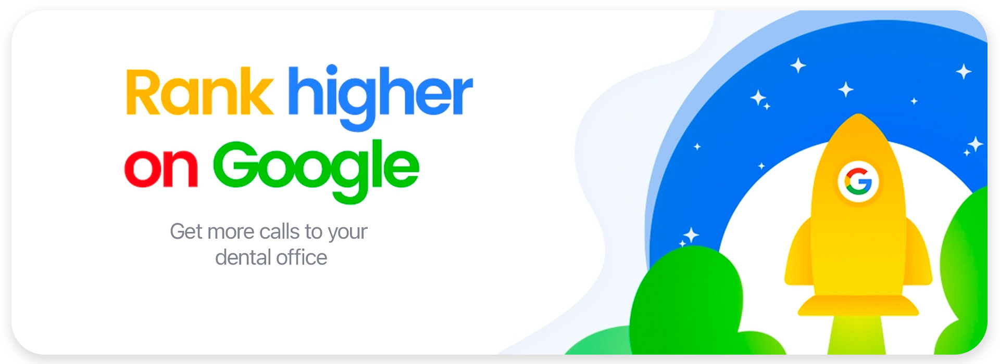

Pump Up Your Dental SEO Marketing With Dental Game Plan
Local SEO for dentists isn’t as simple or easy as other dental marketing agencies say...
Search engine optimization, or SEO, has been a big buzz word in the online dental marketing world for over a decade. Every dentist wants their website to rank high in internet search results, but they don’t know how to make this happen. Simply having a website isn’t enough anymore because every dentist and their mother has one nowadays. If you don’t understand SEO, that’s okay because you don’t need to be a SEO expert to bring in hundreds or thousands of new patients. As long as you do the hard part—provide patients with excellent dental care and service—our dental marketing team can handle the rest.
Most dentists make the mistake of going into meetings with SEO companies without any ideas of what’s good, what’s bad, what works, and what doesn’t. They don’t realize that not all search engine optimization companies are created equal! Most work in all kinds of industries, from dentistry or your local furniture store to everything and anything between. Broader isn’t better—not when you want to build your practice to its maximum potential. Without an understanding of the intricacies of the online dentistry field, these “dental search engine optimization” agencies go after unintended markets that lead to wasted money and no new leads or patients. One of the most common mistakes is that they go after overly competitive key terms you can’t rank highly in quickly.
At Dental Game Plan, we specialize solely in dental marketing, and we’ve been working with dentists for over a decade to help them grow their practices higher than ever. This is in large part due to our understanding of the online dental market and dental websites’ SEO potential. We know how to find web markets and drive in potential patients that other SEO companies and so-called “dental marketers” can’t match. If you’re looking for the right team to get your dental practice ranking high, there’s no other marketing agency that gets the job done quickly and within-budget like us. Call us at (323) 844-0339 to get your dental marketing game face on!
Keywords: Using Web Content To Boost Your Ranking
Put into practice these powerful and often overlooked resources for local SEO.
Metadata
What’s the most important thing to have on your practice’s website? It’s not stylish office photos, convenient click-to-call links, or sleek site design. It’s content. Google and other popular search engines rely on written content—service pages, blog posts, and search result blurbs (“metadata”)—to know how well your site matches searchers’ needs. It’s for this reason that dental keywords are critical for ensuring your service pages as well as any blog posts show up on the first page, if not as first results. If your site’s content doesn’t fit what people search for, potential patients won’t find your site.
Keywords
However, there’s more to a successful dentist website than lining up content and keywords. The wrong keyword can damage your site’s rankings. We’ve seen this happen too many times with other online marketing agencies that don’t understand the online dental world. Keywords shouldn’t just draw in as many people to your website as possible; they must also attract the right traffic and potential patients. After all, you’re more likely to see results for kings and queens than a tooth if you search for “crown” on Google. Attracting irrelevant and uninterested traffic with bad dental keywords can be a costly mistake with little to show for it.
SEO Rankings
Most patients never go further than the first page of Google results, and those few spots are hard fought and harder won. Our expert team has years of experience navigating which keywords work, which don’t, and how to get your website’s content to jumpstart your SEO rankings. We also use search reports to help us further hone in and target what your potential patients are looking for and modify our SEO strategy accordingly. With Dental Game Plan’s help, your SEO strategy can get you hundreds or even thousands of new patients through your front doors. You can reach out to us at (323) 844-0339 today!
high score: Dr. Amada
rosewood dental, Los Angeles
Patient Reviews Boost Dental Search Engine Optimization
Becoming a five-star dentist on the most popular online review sites...
From Yelp to Google Reviews, almost 90% of internet users say they use online reviews to make a decision about a product or service. Of course, you always want to have as high of reviews as possible so that potential new patients feel comfortable and confident seeing you and your staff. However, 5-star ratings don’t just make your office look good for patients searching for you. They can also contribute to securing top-ranking page results for your practice’s website. Our marketing team at Dental Game Plan can help you with this. We have systems in place to help boost our dentists’ online reputation and, in turn, their SEO results with patient reviews.
Why Site Speed is Incredibly Important
Website speed plays a big part in ranking high in local SEO for dentists!
Google’s algorithm has shifted its focus from desktop to a mobile-first search since over 60% of online searches are now done on smartphones. If your site doesn’t perform well on mobile devices, it’s SEO rankings will tank. And mobile users all demand one thing: speed. Site speed (both navigation and loading time) is crucial for both attracting and retaining potential new patients. More than half of all mobile users will leave a webpage if it takes more than three seconds to load. If yours isn’t up to speed, you only put a burning hole in your wallet.

DGP has revolutionized the way we build dental websites. Our sites’ state-of-the-art technology and design ensure every page can load between 1-3 seconds, whether you’re on a computer or searching on your phone. You can count on us to stay lightning-fast and ahead of your competition online. Dominate the mobile space market by teaming up with Dental Game Plan and call us today at (323) 844-0339!
The Social Media-Search Engine Connection
Activity on social media is critical to dental search engine optimization!
Do you have a Facebook page, Instagram account, Twitter profile, or other social media for your office that are sitting there unused? You’re not alone. You’re also missing out on a crucial way to market your practice to potential patients that Google can’t reach as well as boost your SEO rankings! Most dentists (and many marketers) don’t understand this connection. SEO is actually affected by a number of social media-related factors. Your likes and followers count, frequency of user activity, number of backlinks you’ve earned are just a few of these.
For all you non-posters out there, you don’t have to struggle on your own—or with the poor help of so-called “dental marketers” who don’t understand the ins and outs of the online dental field. At Dental Game Plan, we have an unrivaled understanding of the connection between dental SEO marketing and social media. Our experts stay active on Facebook, Twitter, Instagram and any other emerging social platforms, and we keep updated on the latest trends and features to help you as best we can. Optimization is key for us, and we continuously adjust our strategies to these trends to better develop your social media presence and get you ahead of the competition in search engine results.
Go With The Best With Dental Game Plan
It’s time to stop messing around with amateurs. Get yourself an unmatched dental game plan!
PThere are thousands of marketing agencies that boast their SEO abilities. You may have already worked with one or more of them—with little to no results for all your hard effort. The problem is that these generic companies don’t know the first thing about dental marketing. The online dental world is its own beast, and it takes a seasoned expert to truly understand how to tame it and use it to your office’s best advantage. At Dental Game Plan, our experienced marketing team specializes in dental marketing, using our 14 years in this unique space to ensure our dentists see better results faster and more affordably. If you’re looking to grow your dental office and drive your new patient numbers sky high, it’s time to choose the best experts for the job. We’ll take a look at your page, your ranking report, backlinks, keywords, your overall online presence, and more to come up with the best SEO strategies for you. No one does what we do, and our proprietary SEO technologies and methods propel you light years beyond the competition. Don’t waste time and money with companies that don’t know what they’re doing and call us at (323) 844-0339 to get your dental game face on!
Dental SEO involves changing your website’s design and content to make it more appealing to search engines. Great SEO rankings allow your dental practice’s website to appear higher in search engine page results for relevant words and phrases potential patients are looking for.
Outside of traditional methods like postcards, radio, and television, marketing your dental office online first depends on having a great website for your practice. Develop a presence on social media and leverage it to drive traffic to your website. Use Google Ads to promote your website as well.
The Small Business Administration recommends spending 7-8% of your gross revenue on marketing if you’re making less than $5 million a year and your net profit margin is in the 10-12% range. Some dental offices, especially DSO's, may want to use a more aggressive budget. Our experienced marketing team can help you with your budget so you get the most bang for your buck. We follow a strict total transparency policy, so you always know exactly how and where your money is used. This makes it easy for us to adjust strategies and budgets to your best advantage.